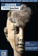

Croatia :: Books
Travel Guides
Short descriptions of Croatia appear in four of Lonely Planet's regional guides listed in the Overview section: Europe on a Shoestring, Eastern Europe, Mediterranean Europe, and Southeastern Europe. The last of these includes the most detail.
It's one of the ironies of travel in the Balkans that it can be hard to find decent guidebooks to countries where a good guide would be especially useful, while we are spoiled for choice when it comes to countries like Croatia, where it is generally easy to find information on the spot. For most visitors there is not much to choose between Bradt, Rough Guides, and Lonely Planet; keen hikers should probably opt for Bradt.
 |
Croatia - The Bradt Travel Guide (6th edition published March 2016) - Piers Letcher with Rudolf AbrahamIn contrast to their other guides to the Western Balkans, Bradt are competing in a crowded field with this guide to Croatia, and it more than holds its own. The author Piers Letcher has some experience at this kind of thing - in fact he was unlucky enough to write a guide to Yugoslavia in 1989, just before the country collapsed. It's normal for travel guidebooks to become dated quite quickly, but surely few have ever become irrelevant quite as fast as that one. As well as the usual details of historic towns and public transport, this guide is particularly strong on national parks and hiking. |
More about this book: Amazon (USA)Amazon (UK) |
 |
The Rough Guide to Croatia (7th edition published March 2016) - Jonathan Bousfield |
More about this book: Amazon (USA)Amazon (UK) |
 |
Lonely Planet Croatia (8th edition published April 2015) |
More about this book: Amazon (USA)Amazon (UK) |
|  |
Zagreb In Your PocketThis informative and regularly updated guide to Croatia's capital can be ordered online, bought from news outlets around Zagreb, or downloaded as a free PDF file. Guides to Dubrovnik, Rijeka, Zadar, Split and Osijek are also available. |
More about this book: In Your Pocket |
 |
Cicerone Guide to Walking in Croatia (2nd edition published June 2010) - Rudolf AbrahamIf hiking is the main objective of your trip, this Cicerone guide might suit you. It includes one-day hikes and multi-day treks, including areas such as the Velebit Mountains and Gorski Kotar that are typically mentioned only briefly in other guidebooks. |
More about this book: Amazon (USA)Amazon (UK) |
 |
The Islands of Croatia - 30 Walking Routes on 14 Adriatic Islands (1st edition published June 2014) - Rudolf AbrahamOne of the pleasures of visiting the Croatian Adriatic is discovering the many excellent footpaths that cross the islands. This guidebook offers a fine selection of day walks from Krk in the north to Mljet in the south. Many of the walks are relatively easily, generally within easy reach of facilities and public transport. |
More about this book: Amazon (USA)Amazon (UK) |
 |
Landscapes of Croatia (Sunflower Guide) (published Jan 2006) - Sandra BardwellIn addition to suggested driving tours, this guidebook includes an excellent selection of 37 walks and hikes, including some testing one-day hikes on the mainland as well as shorter strolls around Croatia's islands suited to casual walkers. I found this guide very useful on my own trips to Croatia. |
More about this book: Amazon (USA)Amazon (UK) |
Background Reading
In addition to the books listed here, several of the works on Balkan history listed in the Overview may be of interest. There are substantial sections on Croatia in several books dealing with the former Yugoslavia, including The Impossible Country, Through the Embers of Chaos and Black Lamb and Grey Falcon
. |
The Culture of Lies: Antipolitical Essays - Dubravka Ugrešić
Dervla Murphy wrote of The Culture of Lies that this "slim volume of essays taught me more about the disintegration of Yugoslavia than any other book". I was similarly impressed. Ugrešić describes with clarity and humour the pressure to conform to nationalist ideology, refusing to accept that her memories of Yugoslavia are meaningless or treacherous. |
More about this book: Amazon (USA)Amazon (UK) |
 |
The Museum of Unconditional Surrender - Dubravka Ugrešić
It's easier to read this book than to describe it. In some places it reads like a novel, in others like a memoir. Underlying its loosely connected fragments are themes of memory and exile. |
More about this book: Amazon (USA)Amazon (UK) |